СП 382.1325800.2017 «Конструкции деревянные клееные на вклеенных стержнях. Метод»
О документе: разработчики, утверждение, регистрация, ключевые слова
СВОД ПРАВИЛ СП 382.1325800.2017
Издание официальное
Москва 2017
1 ИСПОЛНИТЕЛЬ - Акционерное общество «Научно-исследовательский центр «Строительство» (АО «НИЦ «Строительство») - Центральный научноисследовательский институт строительных конструкций им. В.А. Кучеренко (ЦНИИСК им. В.А. Кучеренко)
- 2 ВНЕСЕН Техническим комитетом по стандартизации ТК 465 «Строительство»
- 3 ПОДГОТОВЛЕН к утверждению Департаментом градостроительной деятельности и архитектуры Министерства строительства и жилищнокоммунального хозяйства Российской Федерации (Минстрой России)
- 4 УТВЕРЖДЕН приказом Министерства строительства и жилищнокоммунального хозяйства Российской Федерации от 20 декабря 2017 г. № 1688/пр и введен в действие с 21 июня 2018 г.
- 5 ЗАРЕГИСТРИРОВАН Федеральным агентством по техническому регулированию и метрологии (Росстандарт)
В случае пересмотра (замены) или отмены настоящего свода правил соответствующее уведомление будет опубликовано в установленном порядке. Соответствующая информация, уведомление и тексты размещаются также в информационной системе общего пользования - на официальном сайте разработчика (Минстрой России) в сети Интернет
© Минстрой России, 2017
Настоящий нормативный документ не может быть полностью или частично воспроизведен, тиражирован и распространен в качестве официального издания на территории Российской Федерации без разрешения Минстроя России
Дата введения - 2018-06-21
УДК 624.011.1.04(083.74) ОКС 91.080.20
Ключевые слова: клееные деревянные конструкции (КДК), древесина слоистая из клееного шпона (ДШК), сорт, класс прочности, расчетные сопротивления, составные элементы, центрально-растянутые, центрально-сжатые, изгибаемые элементы, осевая сила с изгибом, вклеенный стержень, наклонно вклеенный стержень, поперечно вклеенный стержень, вклеенный нагель, выдергивание, продавливание, узел, жесткий стык, балка, ферма, арка, рама, скорость обугливания
Руководитель организации-разработчика
АО «НИЦ «Строительство», Директор А. В. Кузьмин
ЦНИИСК им. В.А. Кучеренко Директор И.И. Ведяков
Руководитель разработки,
Заведующий лабораторией А. А. Погорельцев
Введение
6 ВВЕДЕН ВПЕРВЫЕ
Настоящий свод правил разработан в целях повышения уровня безопасности в зданиях и сооружениях людей и сохранности материальных ценностей в соответствии с федеральными законами от 30 декабря 2009 г. № 384-ФЗ «Технический регламент о безопасности зданий и сооружений», от 23 ноября 2009 г. № 261-ФЗ «Об энергосбережении и повышении энергетической эффективности и о внесении изменений в отдельные законодательные акты Российской Федерации», от 22 июля 2008 г. № 123-ФЗ «Технический регламент о требованиях пожарной безопасности».
Приведенные в настоящем своде правил требования по расчету и конструированию узловых соединений элементов деревянных конструкций, выполненных с использованием вклеенных стержней, являются развитием основных положений СП 64.13330.2017 «СНиП II-25-80 «Деревянные конструкции».
Настоящий свод правил является нормативным документом, используемым при изготовлении, проектировании и применении КДК с узловыми соединениями на вклеенных стержнях.
Работа выполнена АО «НИЦ «Строительство» - ЦНИИСК им. В.А. Кучеренко (руководитель разработки - канд. техн. наук А.А. Погорельцев , исполнители - д-р техн. наук, проф. Л.М. Ковальчук , д-р техн. наук С.Б. Турковский , канд. техн. наук А.Д. Ломакин , канд. техн. наук Ю.Ю. Славик , канд. техн. наук П.Н. Смирнов , И.А. Кондрашев , А.Н. Пьянов , Д.С. Солоницын , В.О. Стоянов , М.А. Филимонов , К.А. Устименко ) при участии «Института БелНИИС» (д-р техн. наук, проф. А.Я. Найчук ) и СПбГАСУ (д-р техн. наук, проф. Е.Н. Серов ).
1Область применения
2Нормативные ссылки
- В настоящем своде правил использованы нормативные ссылки на следующие документы:
- ГОСТ 5781-82 Сталь горячекатаная для армирования железобетонных конструкций. Технические условия
- ГОСТ 9077-82 Кварц молотый пылевидный. Общие технические условия
- ГОСТ 10587-84 Смолы эпоксидно-диановые неотвержденные. Технические условия
- ГОСТ 18288-87 Производство лесопильное. Термины и определения
- ГОСТ 20850-2014 Конструкции деревянные клееные несущие. Общие технические условия
- ГОСТ 27751-2014 Надежность строительных конструкций и оснований. Основные положения
- ГОСТ 30247.0-94 Конструкции строительные. Методы испытаний на огнестойкость. Общие требования
- ГОСТ 30247.1-94 Конструкции строительные. Методы испытаний на огнестойкость. Несущие и ограждающие конструкции
- [ГОСТ 31938-2012 Арматура композитная полимерная для армирования бетонных конструкций. Общие технические условия](http://www.rags.ru/gosts/gost/54161/)
- ГОСТ 33080-2014 Конструкции деревянные. Классы прочности конструкционных пиломатериалов и методы их определения
- ГОСТ 33081-2014 Конструкции деревянные клееные несущие. Классы прочности элементов конструкций и методы их определения
- ГОСТ Р 56705-2015 Конструкции деревянные для строительства. Термины и определения
- ГОСТ Р 56710-2015 Соединения на вклеенных стержнях для деревянных конструкций. Технические условия
- СП 14.13330.2014 «СНиП II-7-81* Строительство в сейсмических районах» (с изменением № 1)
СП 16.13330.2017 «СНиП II-23-81* Стальные конструкции»
КОНСТРУКЦИИ ДЕРЕВЯННЫЕ КЛЕЕНЫЕ НА ВКЛЕЕННЫХ СТЕРЖНЯХ Методы расчета
Glued laminated wooden structures on glued rods. Calculation methods
- СП 28.13330.2017 «СНиП 2.03.11-85 Защита строительных конструкций от коррозии» СП 63.13330.2012 «СНиП 52-01-2003 Бетонные и железобетонные конструкции. Основные положения» (с изменениями № 1, № 2, № 3)
- СП 64.13330.2017 «СНиП II-25-80 Деревянные конструкции» (с изменением № 1)
- СП 70.13330.2012 «СНиП 3.03.01-87 Несущие и ограждающие конструкции» (с изменениями № 1, № 3)
Примечание - При пользовании настоящим сводом правил целесообразно проверить действие ссылочных документов в информационной системе общего пользования - на официальном сайте федерального органа исполнительной власти в сфере стандартизации в сети Интернет или по ежегодному информационному указателю «Национальные стандарты», который опубликован по состоянию на 1 января текущего года, и по выпускам ежемесячного информационного указателя «Национальные стандарты» за текущий год. Если заменен ссылочный документ, на который дана недатированная ссылка, то рекомендуется использовать действующую версию этого документа с учетом всех внесенных в данную версию изменений. Если заменен ссылочный документ, на который дана датированная ссылка, то рекомендуется использовать версию этого документа с указанным выше годом утверждения (принятия). Если после утверждения настоящего свода правил в ссылочный документ, на который дана датированная ссылка, внесено изменение, затрагивающее положение, на которое дана ссылка, то это положение рекомендуется применять без учета данного изменения. Если ссылочный документ отменен без замены, то положение, в котором дана ссылка на него, рекомендуется применять в части, не затрагивающей эту ссылку. Сведения о действии сводов правил целесообразно проверить в Федеральном информационном фонде стандартов.
3Термины и определения
В настоящем своде правил применены термины по ГОСТ 18288, ГОСТ Р 56705, а также следующие термины с соответствующими определениями:
- 3.1вклеенный стержень
- Стержень из материала повышенной прочности (стали, алюминиевого сплава, композита и др.), вклеенный в просверленное в древесине отверстие.
- 3.2наклонный стержень
- Стержень, вклеенный в отверстие, просверленное в древесине под углом к волокнам.
- 3.3поперечное армирование
- Армирование деревянных конструкций наклонно вклеенными стержнями.
- 3.4поперечный стержень
- Наклонно вклеенный стержень при угле наклона к волокнам (90 ± 20)º.
4Сокращения и обозначения
ДК - деревянные конструкции;
ДШК (LVL) - конструкции клееные из шпона;
КДК - клееные деревянные конструкции.
4.2Обозначения
В настоящем своде правил применены следующие обозначения:
4.2.1 Усилия от внешних нагрузок и воздействий в поперечном сечении элемента
М - изгибающий момент;
- N - продольная сила;
- Q - поперечная сила.
4.2.2 Характеристики материалов
E 0 , E - модуль упругости древесины и фанеры вдоль волокон;
E 90 - модуль упругости древесины и фанеры поперек волокон;
G 0,90 , G - модуль сдвига древесины относительно осей, направленных вдоль и поперек волокон; m m m
```
- коэффициент приведения к древесине; а - коэффициент, учитывающий влияние пропитки антипиренами; в - коэффициент условий эксплуатации конструкций; ``` m дл - коэффициент, учитывающий длительную нагрузку; m о - коэффициент, учитывающий ослабления сечения растянутых и изгибаемых элементов; m п - коэффициент перехода для расчетных сопротивлений сосны к соответствующим значениям других пород древесины; m с.с - коэффициент, учитывающий срок службы; m т - коэффициент температурных условий;
R вс А - расчетное сопротивление клеевого шва выдергиванию или продавливанию стержней, при влажности древесины 12 % для режима нагружения А, в сооружениях 2-го класса функционального назначения, при сроке эксплуатации не более 50 лет;
R вс. - расчетное сопротивление клеевого шва выдергиванию или продавливанию стержня, вклеенного под углом к волокнам;
R вс.0 - расчетное сопротивление клеевого шва выдергиванию или продавливанию стержня, вклеенного вдоль волокон;
R и - расчетное сопротивление древесины изгибу вдоль волокон;
R р - расчетное сопротивление древесины растяжению вдоль волокон;
R р90 - расчетное сопротивление древесины растяжению поперек волокон;
R с - расчетное сопротивление древесины сжатию вдоль волокон;
R с90 - расчетное сопротивление древесины сжатию поперек волокон;
R ск - расчетное сопротивление древесины сдвигу вдоль волокон;
R см - расчетное сопротивление древесины смятию вдоль волокон;
Т - расчетная несущая способность связи.
4.2.3 Геометрические характеристики b - ширина поперечного сечения; d - номинальный диаметр стержней арматурной стали, анкеров, болтов, гвоздей, шурупов и др.; dh - диаметр головки винта, шурупа или наружный диаметр шайбы; d о - диаметр отверстия;
F - площадь поперечного сечения элемента;
F бр - площадь поперечного сечения элемента брутто;
F нт - площадь поперечного сечения элемента нетто;
F расч - расчетная площадь поперечного сечения элемента;
F ск - расчетная площадь скалывания;
F см - расчетная площадь смятия; h - высота поперечного сечения;
I - момент инерции поперечного сечения элемента;
I бр - момент инерции поперечного сечения элемента брутто;
I нт - момент инерции поперечного сечения элемента нетто;
I пр - приведенный момент инерции поперечного сечения элемента; l - пролет, длина элемента; l 0 - расчетная длина элемента; l н - глубина заделки нагеля; l р - расчетная длина стержня; l см - длина площадки смятия; r - радиус инерции сечения;
S - статический момент поперечного сечения элемента;
S ′бр - статический момент брутто сдвигаемой части поперечного сечения элемента;
S 1 - расстояние вдоль волокон между осями вклеенных стержней;
S 2 - расстояние поперек волокон между осями вклеенных стержней;
СП 382.1325800.2017
S 3 - расстояние от боковой грани до оси вклеенного стержня; W - момент сопротивления поперечного сечения элемента; W пр - приведенный момент сопротивления поперечного сечения элемента; W расч - расчетный момент сопротивления поперечного сечения элемента.
4.2.4 Прочие основные характеристики f - прогиб элемента; k c - коэффициент податливости соединений; n - число винтов, шурупов в соединении; n рас - расчетное число винтов, шурупов в соединении; n ш - расчетное число швов в элементе.
5Общие положения
6Требования к элементам соединений
6.1Требования к материалам узловых соединений
Прочность древесины соответствующих сортов или классов прочности, а также прочность клееных элементов должны быть не ниже нормативных сопротивлений, приведенных в приложении В СП 64.13330.2017.
- В зависимости от температурно-влажностных условий эксплуатации (классов условий эксплуатации) следует предъявлять требования к максимальным значениям эксплуатационной влажности древесины и учитывать зависимость ее прочности от этих значений.
Клееная древесина должна удовлетворять требованиям ГОСТ 20850, ГОСТ 33080, ГОСТ 33081.
- СП 382.1325800.2017 Возможность использования других типов клея и видов наполнителя для вклеивания стержней должна быть обоснована соответствующими испытаниями с определением физико-механических характеристик и технологичности. 6.1.4 Влажность древесины при вклеивании стержней должна быть в интервале от 8 % до 14 % в зависимости от условий эксплуатации конструкций (см. приложение А СП 64.13330.2017). Не допускается использование вклеенных стержней для клееных пакетов с компенсационными прорезями в слоях.
- номинальный диаметр вклеиваемого стержня из арматуры периодического профиля классов А300-А600 на 4-6 мм;
- наружный диаметр резьбы или диаметр гладких стержней из арматуры класса А240, круглой стали и композитов на 2 мм.
6.2Требования к вклеиваемым стержням
Допускается использовать высокопрочную арматуру с винтовой формой профиля и соответствующими гайками без сварки. Для вклеенных нагелей допускается использовать круглую сталь и арматуру класса А240 без нарезки (резьбы). Стержни могут быть защищены от коррозии гальваническим или термодифуззионным цинкованием толщиной до 60 мкм.
7Расчетные характеристики материалов
где R вс А - расчетное сопротивление выдергиванию или продавливанию стержней, МПа, приведенное в таблице 7.1, влажностью 12 % для режима нагружения А, согласно таблице 7.2, в сооружениях 2-го класса функционального назначения, согласно приложению А СП 64.13330.2017, при сроке эксплуатации 50 лет;
- m дл -коэффициент длительной прочности, учитывающий сочетание действующих нагрузок, значение которого следует принимать по таблице 7.2;
Π mi - произведение коэффициентов условий работы (7.5).
Таблица 7.1
| Направление вклеивания стержня относительно направлению волокон | Обозначение | Расчетное сопротивление, МПа |
|---|---|---|
| 1 Вдоль волокон | R А вс 0 | 3,2 |
| 2 Под углом к волокнам | R А вс α | 6,0 |
Таблица 7.2
| Обозначение режима нагружения | Сочетания действующих нагрузок | Приведенное расчетное время действия нагрузки, с | Коэффициент длительной прочности m дл |
|---|---|---|---|
| А | Линейно возрастающая нагрузка при стандартных машинных испытаниях | 1-10 | 1,0 |
| Б | Совместное действие постоянной и длительной временной нагрузок, напряжение от которых превышает 80 %полного напряжения в элементах конструкций от всех нагрузок | 10 8 -10 9 | 0,53 |
| В | Совместное действие постоянной и кратковременной снеговой нагрузок | 10 6 -10 7 | 0,66 |
| Г | Совместное действие постоянной и кратковременной ветровой и (или) монтажной нагрузок | 10 3 -10 4 | 0,8 |
| Д | Совместное действие постоянной и сейсмической нагрузок | 10-10 2 | 0,92 |
| Е | Действие импульсивных и ударных нагрузок | 10 -1 -10 -8 | 1,1-1,35 |
| Ж | Совместное действие постоянной и кратковременной снеговой нагрузок в условиях пожара | 10 3 -10 4 | 0,8 |
| И | Для опор воздушных линий электропередачи - гололедная, монтажная, ветровая при гололеде, от тяжения проводов при температуре ниже среднегодовой | 10 4 -10 5 | 0,85 |
| К | Для опор воздушных линий электропередачи - при обрыве проводов и тросов | 10 -1 -10 -2 | 1,1 |
Расчетные сопротивления выдергиванию или продавливанию стержней R А для других пород древесины устанавливают путем умножения значений, приведенных в таблице 7.1, на переходные коэффициенты m п, указанные в таблице 7.3.
Таблица 7.3
| Древесная порода | Коэффициент m п |
|---|---|
| Хвойные | |
| 1 Лиственница, кроме европейской | 1,0 |
| 2 Кедр сибирский, кроме кедра Красноярского края | 0,9 |
| 3 Кедр сибирский Красноярского края | 0,65 |
| 4 Пихта | 0,8 |
| Твердые лиственные | |
| 5 Дуб | 1,3 |
| 6 Ясень, клен, граб | 1,3 |
| 8 Береза, бук | 1,1 |
| 9 Вяз, ильм | 1,0 |
| Мягкие лиственные | |
| 10 Ольха, липа, осина, тополь | 0,8 |
- а) для различных условий эксплуатации конструкций - коэффициент m в, указанный в таблице 7.4;
- б) конструкций, эксплуатируемых при установившейся температуре воздуха ниже плюс 35 °С, - коэффициент m т = 1; при температуре плюс 50 °С - коэффициент m т = 0,8. Для промежуточных значений температуры коэффициент принимают по интерполяции;
- в) элементов, подвергнутых глубокой пропитке антипиренами под давлением, коэффициент m а = 0,9;
- г) в зависимости от срока службы - коэффициент m с.с , указанный в таблице 7.5.
Таблица 7.4
| Класс условий эксплуатации (таблица 1 СП 64.13330.2017) | 1А и 1 | 2 | 3 | 4 |
|---|---|---|---|---|
| Коэффициент m в | 1 | 0,9 | 0,85 | 0,75 |
Таблица 7.5
| Вид напряженного состояния | Значение коэффициента m c.c при сроке службы сооружения | Значение коэффициента m c.c при сроке службы сооружения | Значение коэффициента m c.c при сроке службы сооружения |
|---|---|---|---|
| 50 лет | 75 лет | 100 лет и более | |
| Изгиб, сжатие, смятие вдоль и поперек волокон древесины | 1,0 | 0,9 | 0,8 |
| Примечание - Значения коэффициента m c.c для промежуточных сроков службы сооружения принимают по линейной интерполяции. | Примечание - Значения коэффициента m c.c для промежуточных сроков службы сооружения принимают по линейной интерполяции. | Примечание - Значения коэффициента m c.c для промежуточных сроков службы сооружения принимают по линейной интерполяции. | Примечание - Значения коэффициента m c.c для промежуточных сроков службы сооружения принимают по линейной интерполяции. |
8Расчет соединений
8.1Общие указания
8.2Соединения на стержнях, вклеенных вдоль волокон
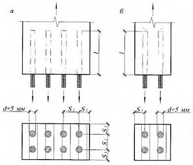
d - диаметр стержня; l - длина заделываемой части стержня; S 2 , S 3 - см. 8.2.3
Рисунок 8.1 - Соединения на стержнях из арматуры периодического профиля, вклеенных вдоль волокон в цилиндрические отверстия ( а ) или в профрезерованные пазы ( б )
где R вс0 - расчетное сопротивление выдергиванию или продавливанию стержня, вклеенного вдоль волокон, МПа, определяемое по пункту 1 таблицы 7.1; d 1 - диаметр отверстия, м; l - длина заделываемой части стержня, м, которую следует принимать по расчету, но не менее 10 d и не более 30 d ; k c -коэффициент, учитывающий неравномерность распределения напряжений сдвига в зависимости от длины заделываемой части стержня, который следует определять по формуле
здесь ac = 1,2; bc = 0,02; m дл и Π mi - в соответствии с 7.4.
8.3Соединения на стержнях, вклеенных под углом к волокнам
где R вс α - расчетное сопротивление древесины выдергиванию или продавливанию стержня, вклеенного под углом к волокнам, принимаемое по пункту 2 таблицы 7.1, МПа; d о - диаметр отверстия, м; l p - расчетная длина стержня, м, определяемая по формуле
здесь l - длина заделываемой части, м; l о = 3 d - глубина возможного снижения прочности клеевой прослойки при сварке; для стержней без сварки l о = 0; d - диаметр вклеиваемого стержня, м; k σ -коэффициент, зависящий от знака нормальных напряжений вдоль волокон в зоне установки стержней; k c - в соответствии с 8.2.2; kd - коэффициент, учитывающий зависимость расчетного сопротивления от диаметра стержня
здесь ad = 1,12; bd = 0,1;
F α - площадь сечения стержня, м² ;
R α - расчетное сопротивление материала стержня, МПа.
Для стержней, работающих на выдергивание в зоне растягивающих напряжений, действующих вдоль волокон древесины элемента конструкции, значения коэффициента k σ следует определять по формуле
где b σ = 0,001; σ - максимальные растягивающие напряжения, МПа.
При расположении стержней в сжатой зоне, а также для стержней, работающих на продавливание, k σ = 1.
8.4Соединения, работающие на сдвиг, на стержнях, вклеенных под углом к плоскости сдвига
где Т сд - расчетное сдвигающее усилие, кН; n вс - количество вклеенных стержней; k с.р - коэффициент совместной работы.
вс α - несущая способность стержня, работающего на выдергивание (8.3.1); α - угол наклона вклеенной связи к плоскости сдвига. где T
Усилие прижима N с, соответствующее одному наклонно вклеенному стержню, вызывающее смятие под пластиной σсм и сжатие в поперечно вклеенном стержне, следует определять по формуле
а - расстояние от края пластины до оси стержня; h - высота сечения элемента; h ст - высота сечения стыка; l - длина заделываемой части стержня; l с - длина сжатого стержня; N р - усилие растяжения; N с - усилие сжатия; Q - поперечная сила; S - шаг стержней; T сд - усилие сдвига; Т' сд -усилие сдвига, приходящееся на один наклонно вкленный стержень; t - толщина пластины; α - угол наклона стержней; σс - напряжение сжатия
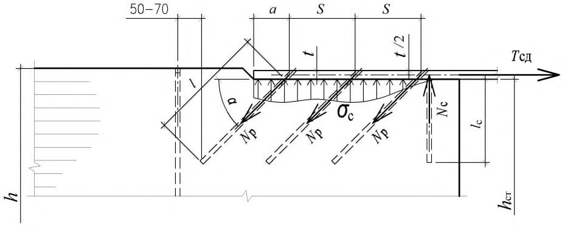
Рисунок 8.2 - Работа наклонно вклеенного стержня в соединении, работающем на сдвиг, растянутого при наличии контакта по плоскости сплачивания ( а ) и сжатого или растянутого при отсутствии контакта ( б )
где N р = Т' сд cosα - составляющая расчетного усилия на один стержень Т с, МН, вызывающая в наклонных стержнях напряжения растяжения;
- T а = F а R а - расчетная несущая способность одного стержня по условию прочности на растяжение, МН;
- здесь F а - площадь сечения стержня, м² ;
- R а - расчетное сопротивление растяжению арматурной стали для А300 R а = 285 МПа и для А400 R а = 375 МПа;
- Q = Т' сд sinα - составляющая того же усилия Т с, вызывающая в наклонных стержнях напряжения изгиба;
- T н - расчетная несущая способность стержня на один шов из условия его работы на изгиб, МН, принимается:
- а) при жестком (сварном) соединении вклеенного стержня номинальным диаметром d со стальной накладкой или анкерной полосой:
- T н = 80 d 2 m длΠ mi - для арматуры А300;
- T н = 105 d 2 m длΠ mi - для арматуры А400;
- б) при нежестком болтовом соединении вклеенного стержня номинальным диаметром d со стальной накладкой:
- T н = 60 d 2 m длΠ mi - для арматуры А300;
- T н = 75 d 2 m длΠ mi - для арматуры А400.
- при одном анкере или одном наклонном стержне с одной стороны стыка и на одной грани k с.р = 1;
- двух анкерах или двух наклонных стержнях k с.р = 0,9;
- большем количестве анкеров или стержней k с.р = 0,75.
8.5Соединения на вклеенных нагелях
Примечание l н, S 1S 3 см. в 4.2.
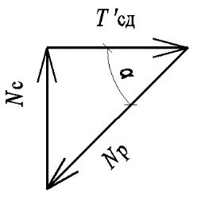
Рисунок 8.3 - Схема шахматной ( а ) и двухрядной ( б ) расстановок вклеенных стальных нагелей в соединении деревянных элементов
- а) на коэффициент k (таблица 19 СП 64.13330.2017) при расчете на смятие древесины в нагельном гнезде (для нагеля, работающего в торце, расчет не выполняют);
- б) k при расчете нагеля на изгиб; угол следует принимать равным большему из углов смятия нагелем элементов, прилегающих к рассматриваемому шву (кроме нагеля, работающего в торце);
- в) 0,6 k при расчете нагеля на изгиб, работающего в торце деревянного элемента.
- 2 См. примечания 2-4, 7 и 8 к таблице 18 СП 64.13330.2017.
- 3 Расчет нагельных соединений на скалывание проводить не следует, если выполнены условия расстановки нагелей в соответствии с пунктом 8.55 СП 64.13330.2017.
Таблица 8.1
| Схема соединений | Напряженное состояние соединения | Расчетная несущая способность Т н на один шов сплачивания (условный срез), кН |
|---|---|---|
| 1 Симметричные соединения 2 Несимметричные соединения | а) Смятие в средних элементах б) Смятие в крайних элементах а) Смятие во всех элементах равной толщины, а также в более толстых элементах односрезных соединений б) Смятие в более толстых средних элементах двухсрезных соединений при а ≤ 0,5 с в) Смятие в более тонких крайних элементах при а ≤ 0,35 с г) Смятие в более тонких элементах односрезных соединений и в крайних элементах при с > а > 0,35 с а) Изгиб нагеля из арматуры А300 | 0,75 cd о 1,2 аd о 0,53 cd о 0,38 cd о 0,8 ad о 1,5 k н ad о d 2 +0,025 l н 2 , но не более 3,9 d 2 2 |
| 3 Симметричные и несимметричные соединения | б) Изгиб нагеля из арматуры А400 | 2,5 2 3,1 d +0,025 l н , но не более 4,5 d 2 |
Таблица 8.2
| Коэффициент k α для нагелей | Коэффициент k α для нагелей | Коэффициент k α для нагелей | Коэффициент k α для нагелей | Коэффициент k α для нагелей | |
|---|---|---|---|---|---|
| Угол, град | стальных, алюминиевых и стеклопластиковых диаметром, мм | стальных, алюминиевых и стеклопластиковых диаметром, мм | стальных, алюминиевых и стеклопластиковых диаметром, мм | стальных, алюминиевых и стеклопластиковых диаметром, мм | дубовых |
| 12 | 16 | 20 | 24 | ||
| 30 | 0,95 | 0,90 | 0,90 | 0,90 | 1,0 |
| 60 | 0,75 | 0,70 | 0,65 | 0,60 | 0,8 |
| 90 | 0,70 | 0,65 | 0,55 | 0,50 | 0,7 |
Усилие, вызывающее растяжение древесины поперек волокон (рисунок 8.4, а ), должно удовлетворять условию
𝐹р,2
F р,1 и F р,2 - сдвигающие усилия с каждой стороны от соединения;
F ск.н,90 р - расчетная несущая способность древесины раскалыванию поперек волокон под воздействием нагельного соединения, Н, которую следует вычислять по формуле
где F ск.н,90 н - нормативная прочности материала, определенная с обеспеченностью 0,95, Н; m дл - коэффициент длительной прочности, соответствующий режиму длительности загружения (таблица 7.2);
Π mi - произведение коэффициентов условий работы (пункт 6.1 СП 64.13330.2017);
- γ m - коэффициент надежности по материалу, определяемый из условия перехода от обеспеченности 0,95 для F ск.н,90 н к обеспеченности 0,99 для F ск.н,90 р по формуле (3).
Нормативную несущую способность древесины раскалыванию поперек волокон под воздействием нагельного соединения следует вычислять по формуле
где F ск.н,90 - нормативная несущая способность древесины раскалыванию поперек волокон под воздействием нагельного соединения в середине пролета; для торцевых соединений и на краю консольной балки F ск.н,90 следует принимать с коэффициентом 0,5, Н; w - коэффициент, который следует принимать равным:
- а) для соединений со стальными накладками с жестким креплением нагелей 1,4,
- б) для остальных нагельных соединений - 1; b - ширина деревянного элемента, мм; - расстояние от центра наиболее удаленного от края деревянного элемента нагеля
- he до кромки деревянного элемента, мм;
- h - высота деревянного элемента, мм.
При he ≥ 0,7 h растягивающее усилие учитывать не требуется, несущая способность соединения определяется несущей способностью нагелей.
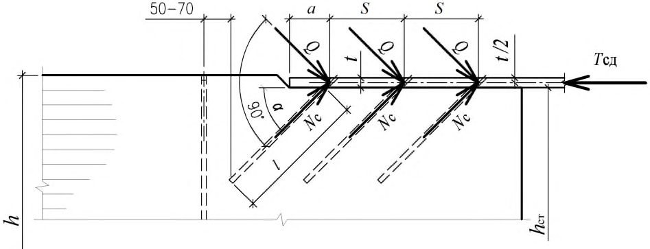
Примечание - Обозначения см. в 8.5.4.
Рисунок 8.4 - Схемы нагельных соединений для расчетов на раскалывание: с направлением передаваемого нагелем усилия под углом к волокнам ( а ) и торцевого ( б )
9Указания по проектированию конструкций на вклеенных стержнях
9.1Общие указания
- для устройства узловых сопряжений элементов плоских и пространственных конструкций (опорных узлов, поясов и решетки в фермах, ключевых шарниров в арках, рамах и т. п.);
- устройства жестких равнопрочных стыков сборных изгибаемых, растянутых, сжатоизгибаемых, растянуто-изгибаемых элементов (балок, арок, ферм, рам, защемленных стоек, жестких нитей, куполов, сводов и т. п.);
- анкеровки закладных деталей, воспринимающих усилия разных направлений;
- восприятия нормальных сжимающих усилий поперек и под углом к волокнам в опорных зонах и местах приложения сосредоточенных нагрузок;
- узловых соединений, воспринимающих сдвиг;
- локализации главных растягивающих напряжений в приопорных зонах клееных деревянных конструкций и зонах больших сосредоточенных нагрузок;
- увеличения несущей способности участков конструкций, в которых действуют нормальные растягивающие напряжения поперек волокон и касательные напряжения (в приопорных зонах высоких балок, в зонах глубоких подрезок или ослаблений врезками, в изгибаемых элементах с криволинейной осью и др.);
- сплачивания КДК, поперечное сечение которых состоит из двух и более элементов;
- в виде наклонно вклеенных стержней в качестве связей сдвига составных ДК, в том числе для комбинированных конструкций с деревянными балками в виде ребер и монолитной железобетонной плитой;
- для поперечного и наклонного армирования КДК в целях повышения их сдвиговой прочности и надежности, в том числе при переменном температурно-влажностном режиме эксплуатации;
- наклонного армирования в целях повышения сдвиговой выносливости.
Принципиальные конструктивные схемы соединений в узлах и стыках элементов для различных напряженно-деформированных состояний приведены на рисунке 9.1.
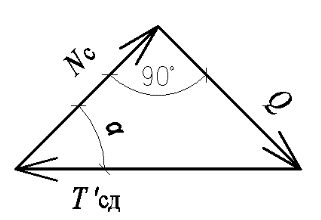
Примечание - Обозначения см. в 4.2. а - связи составных элементов; б - повышение сдвиговой прочности клееной балки; в - анкеровка закладных деталей; г, д - опорные и другие узлы конструкций; е - схема симметричного универсального жесткого стыка элементов сечением до 500 и свыше 600; ж - растянутые элементы; и - сжатые стыки с полимербетоном; к - полигональные элементы, несимметричная схема (карниз рамы); л - узел защемления стоек; А - опорная реакция от расчетной нагрузки
Рисунок 9.1 - Примеры соединений на наклонно вклеенных стержнях
Стержни, вклеенные под углом к волокну менее чем 20º, рассматривают как вклеенные вдоль волокон, под углом 20º и более - как вклеенные под углом к волокнам. Вклеенные поперек волокон стержни являются частным случаем стержней, вклеенных под углом к волокнам.
9.2Балки из клееной древесины и ДШК
где А - опорная реакция от расчетной нагрузки; b и h - ширина и высота соответственно поперечного сечения элемента без подрезки.
Длина опорной площадки подрезки с должна быть не больше высоты сечения h , а длина скошенной части подрезки с 1 - не менее двух глубин а (рисунок 9.2).
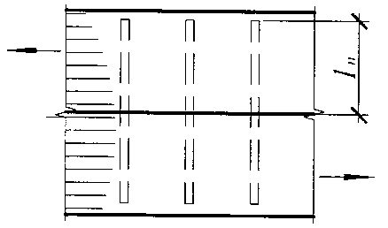
Примечание a , b , c , c 1 и h см. в 9.2.2.
Рисунок 9.2 - Скошенная подрезка конца балки
В том случае, если невозможно выполнить скошенную подрезку или ее глубина превышает 0,25 h , необходимо усиление зоны подрезки. Усиление проводят вклеиванием поперечных (перпендикулярно волокнам) и наклонных (под углом 45° к волокнам) стержней (рисунок 9.3).
Длина поперечных стержней должна удовлетворять условию
где l a -расчетная длина стержня; a р = а - 30 мм (глубина подрезки минус 30 мм на непроклей).
Примечание A , b , h см. в 9.2.2; d , M , Q , S 1 , S 2 - см. 4.2.
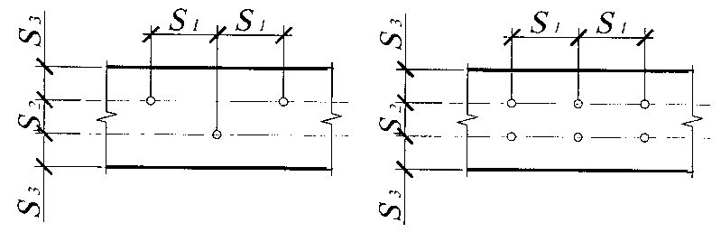
Рисунок 9.3 Усиление подрезки на конце балки
Расчет стержней проводят с учетом того, что растягивающее усилие полностью воспринимается поперечно вклеенными стержнями. Наклонные стержни воспринимают сдвигающие усилия в зоне трещины и снижают касательные напряжения на приопорном участке.
Расстояние от торца подрезки до вклеенных стержней должно быть 80-120 мм (120 мм для конструкций, эксплуатируемых в переменных температурно-влажностных условиях, в том числе на открытом воздухе).
Для двух поперечно вклеенных стержней должно выполняться условие
где Т - несущая способность поперечно вклеенного стержня, определенная по 8.3.1 при l p = a p;
А - опорная реакция; а - глубина подрезки;
- h высота сечения без учета подрезки.
Для наклонно вклеенного стержня должно быть выполнено условие
- где Т - несущая способность поперечно вклеенного стержня, определенная по 8.3.1, при этом уровень площадки опирания условно принимают за местоположение шва сплачивания.
Одна из опор в таких балках, независимо от пролета, должна быть подвижной во избежание возникновения распора.
При расчете гнутоклееных балок на прочность (рисунок 9.4) кроме проверки краевых тангенциальных нормальных напряжений необходима проверка максимальных радиальных растягивающих напряжений σ r max, действующих поперек волокон древесины:
где R p90 - расчетное сопротивление ДК растяжению поперек волокон (пункт 7 таблицы 3 СП 64.13330.2017);
М - расчетный изгибающий момент;
СП 382.1325800.2017
F - площадь поперечного сечения кривого бруса;
- y 0 - расстояние от нейтрального слоя до центра тяжести;
- r, r 0 , r 1 и r 2 - радиусы кривизны геометрической оси, нейтрального слоя, нижней (ближней к центру кривизны) и верхней кромок бруса соответственно.
Примечание - См. обозначения в 9.2.3.
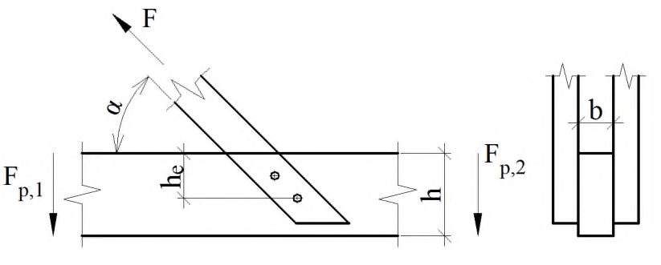
Рисунок 9.4 - Расчетная схема кривого бруса при чистом изгибе
При невыполнении условия по формуле (9.5) допускается выполнять усиление постановкой вклеенных стержней, рассчитанных на восприятие растягивающего усилия, определяемого по формуле
где l 2 - длина хорды криволинейного участка, на котором не выполняется условие по формуле (9.5).
где σ1 - значение главного растягивающего напряжения; σ x , σ y и τ xy - компоненты плоского напряженного состояния;
R р - расчетное значение сопротивления древесины при растяжении под углом к направлению волокон, определяемое по разделу 6 СП 64.13330.2017.
Угол наклона направления главного растягивающего напряжения σ1 к волокнам древесины следует вычислять по формулам:
СП 382.1325800.2017
Величину наибольших нормальных растягивающих поперек волокон древесины напряжений σ y в приопорных зонах и окрестностях действия сосредоточенных поперечных сил P следует определять численным методом либо рассчитывать по формуле
где Р -сосредоточенная сила (опорная реакция балки, давление от подвесного оборудования, усилие сжатия в стойке фермы и т. д.); η1 - ордината положительной части кривой распределения нормальных напряжений σ y от единичной сосредоточенной силы (рисунок 9.5); b - ширина поперечного сечения элемента; h - высота поперечного сечения элемента.
Ординату η1 в интервале - 0,25 h оп y + 0,25 h оп рассчитывают по формуле
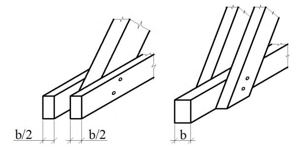
Примечание - Обозначения см. в 9.2.5.
Рисунок 9.5 - Схема распределения напряжений σ y в приопорной зоне балки
При невыполнении условия формулы (9.7) необходима установка вклеенных или ввинченных стержней под углом = 40° - 45° к волокнам древесины. Главное растягивающее усилие, воспринимаемое наклонными стержнями, рассчитывают по формуле
Вклеенные или ввинченные стержни следует устанавливать с одинаковым шагом на длине опасной зоны, равной 0,7 h оп, отстоящей от оси опоры на расстоянии, равном h оп. Первый наклонный стержень должен быть установлен на расстоянии x = h оп + 0,1 h оп от оси опоры. Длина анкеровки стержней должна быть не менее 0,7 h оп/cos .
9.3Составные балки
Конструирование и расчет составных балок (ребристых плит) композитного сечения, в которых железобетонная плита объединена с деревянными ребрами наклонно вклеенными анкерами, следует выполнять, руководствуясь положениями приложения Л СП 64.13330.2017.
Таблица 9.1
| Коэффициент | Число слоев в элементе | Значение коэффициента для расчета изгибаемых составных элементов при пролетах, м | Значение коэффициента для расчета изгибаемых составных элементов при пролетах, м | Значение коэффициента для расчета изгибаемых составных элементов при пролетах, м | Значение коэффициента для расчета изгибаемых составных элементов при пролетах, м |
|---|---|---|---|---|---|
| Коэффициент | Число слоев в элементе | 2 | 4 | 6 | 9 и более |
| k w | ≤ 4 8 | 0,95 0,8 | 0,95 0,85 | 0,95 0,9 | 0,95 0,95 |
| k ж | ≤ 4 8 | 0,85 0,5 | 0,85 0,7 | 0,9 0,8 | 0,9 0,85 |
Несущую способность наклонно вклеенного стержня как связи сдвига Т с.с определяют по формуле
где T вс α - несущая способность стержня, определенная в соответствии с 8.3.1.
Расстояние (шаг) между вклеенными стержнями s c.c должно удовлетворять условию
где Ms расчетная разница изгибающих моментов в начале и конце участка s c.c между вклеенными связями;
I бр -момент инерции брутто поперечного сечения элемента относительно нейтральной оси;
S ′ бр -статический момент брутто ветви составного элемента относительно нейтральной оси.
9.4Жесткие стыки
Универсальными являются анкеры V-образной формы, которые представляют собой комбинацию минимум из двух стержней, вклеенных наклонно по отношению к направлению волокон древесины и образующих между собой внутренний угол.
В растянутых стыках или растянутых зонах стыков допускается применять соединения на стержнях, наклонно вклеенных в одном направлении, работающих на выдергивание и присоединенных на сварке к стальным пластинам, передающим на древесину усилия сжатия, возникающие от разложения усилий растяжения в наклонных стержнях. Работа стержней на продавливание (сжатие) в таких узлах не допускается. а а - расстояние от края пластины до оси стержня; b - ширина пластины; h с - высота сечения стыка; h 0 -плечо пары сил; l - длина заделываемой части стержня; l р - длина растянутого стержня; l с - длина сжатого стержня; N - продольное усилие; N р - усилие растяжения; N с - усилие сжатия; S - шаг стержня; T сд - усилие сдвига; Т' сд -усилие сдвига, приходящееся на один наклонно вкленный стержень; t - толщина пластины; α, β - углы наклона стержней; σс - напряжение сжатия

Рисунок 9.6 - Жесткие растянутые стыки с однонаправленными наклонно вклеенными стержнями ( а ) и V-образными анкерами ( б )
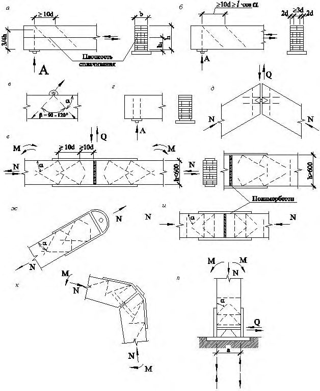
- а - расстояние от края пластины до оси стержня; b - ширина пластины; h с - высота сечения стыка; h 0 -плечо пары сил; l - длина заделываемой части стержня; l р - длина растянутого стержня; l с - длина сжатого стержня; M - изгибающий момент; N - продольная сила; N р.в - верхнее усилие растяжения; N р.н - нижнее усилие растяжения; N с.в - верхнее усилие сжатия; N с.н - нижнее усилие сжатия; S - шаг стержней; T сд.в -верхнее усилие сдвига; T сд.н - нижнее усилие сдвига; Т' сд.в - верхнее усилие сдвига, приходящееся на один стержень ( а ) или анкер ( б ); Т' сд.н - нижнее усилие сдвига, приходящееся на один стержень ( а ) или анкер ( б ); t - толщина пластины; α, β - углы наклона стержней; σс - напряжение сжатия
Рисунок 9.7 - Жесткие растянуто-изгибаемые стыки с однонаправленными наклонно вклеенными стержнями ( а ) и V-образными анкерами ( б )
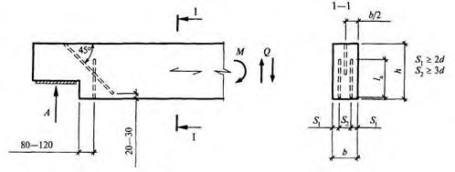
варианты сжатой и растянутой зон стыков сжато-изгибаемых элементов ломаного сечения, например в карнизных узлах рам и т. д.

Рисунок 9.8 - Жесткие изгибаемые стыки с лобовым упором в сжатой зоне с однонаправленными наклонновклеенными стержнями ( а ) и V-образными анкерами ( б ) а а - расстояние от края пластины до оси стержня; b - ширина пластины; h 0 - плечо пары сил; l - длина заделываемой части стержня; l с - длина сжатого стержня; M - изгибающий момент; N р - усилие растяжения; N с - усилие сжатия; S - шаг стержней; T сд - усилие сдвига; Т' сд -усилие сдвига, приходящееся на один наклонно вкленный стержень; t - толщина пластины; α - угол наклона стержней; σс - напряжение сжатия
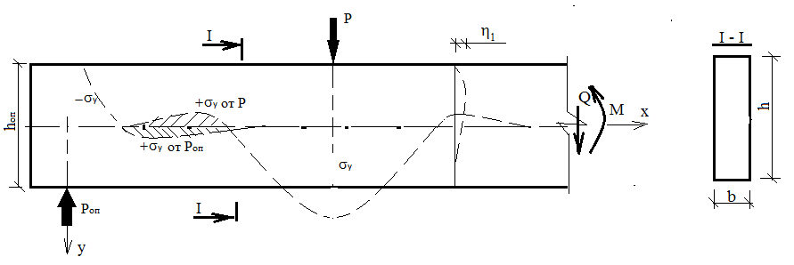
Рисунок 9.9 - Жесткие изгибаемые стыки с центрирующей прокладкой в сжатой зоне с однонаправленными наклонно вклеенными стержнями ( а ) и V-образными анкерами ( б )
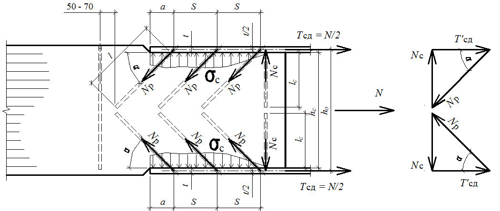
Рисунок 9.10 - Жесткие сжато-изгибаемые стыки с центрирующей прокладкой в сжатой зоне с однонаправленными наклонно вклеенными стержнями ( а ) и V-образными анкерами ( б )
9.5Жесткие опорные узлы линзообразных ферм
Высота фермы в середине пролета: (l/9) L < Н < (1/6) L
Рекомендуемые пролеты L
. таких ферм составляют от 18 до 100 м.
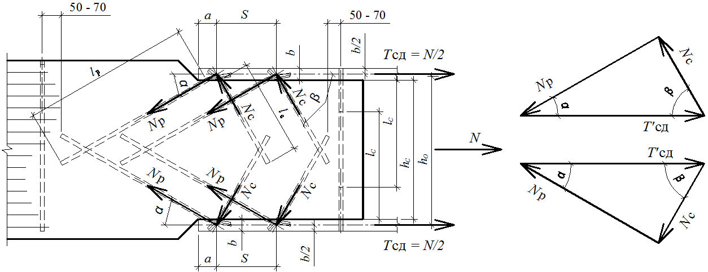
H - высота фермы; L - пролет фермы
Рисунок 9.11 - Схемы линзообразных ферм
- а) усилия в поясах следует определять из условия их неразрезности; следует учитывать изгибающие моменты, возникающие в опорных узлах, выполненных на наклонно вклеенных связях;
- б) усилия в решетке допускается определять из условия шарнирного сопряжения ее элементов с поясами.
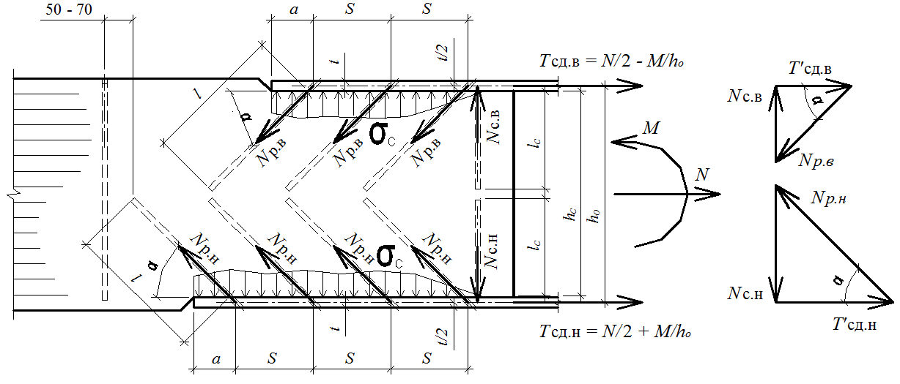
Примечание - Обозначения см. в 9.5.9
Рисунок 9.12 - Схема опорного узла линзообразной фермы
- а) усилия в поясах следует определять из условия их неразрезности; следует учитывать изгибающие моменты, возникающие в опорных узлах, выполненных на наклонно вклеенных связях;
- б) усилия в решетке допускается определять из условия шарнирного сопряжения ее элементов с поясами.
Число вклеенных стержней n с определяют по формуле
где N с - усилие сдвига по плоскости сплачивания верхнего и нижнего поясов;
- Т - несущая способность вклеенного стержня (см. пункт 8.41 СП 64.13330.2017);
- α - угол наклона стержней к плоскости сплачивания, назначаемый в пределах от 30º до 50º; k с.р - коэффициент совместности работы вклеенных связей.
При равномерной расстановке связей k с.р равен 0,8, при расстановке не менее 30 % крайних к опоре связей в виде двух вклеенных стержней по ширине сечения k с.р равен 0,85.
где N и Q - продольная и поперечная силы в верхнем поясе в зоне сплачивания;
- β - угол наклона оси верхнего пояса в зоне сплачивания к плоскости сплачивания; b - ширина сечения фермы; l c - длина площадки сплачивания;
- S 1 - шаг вклеенных связей;
- R см,γ - расчетное сопротивление древесины смятию под углом γ к волокнам, определяемое по формуле (5) СП 64.13330.2017;
- γ - больший из углов наклона плоскости сплачивания к волокнам верхнего (γв) и нижнего (γн) поясов.
Если условие не выполнено, следует увеличить шаг связей или усилить древесину стержнями, вклеенными перпендикулярно плоскости сплачивания.
Шаг вклеенных стержней усиления S 1у следует определять с учетом пункта 8.40 СП 64.13330.2017 по формуле
где T вс α - несущая способность вклеенного стержня усиления (8.3.1).
9.6Композитные деревожелезобетонные балки
Примечание - Обозначения см. в 9.6.6, 9.6.8.
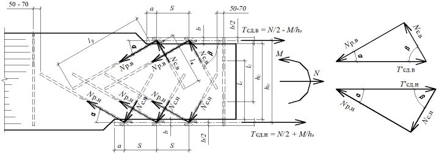
а - общий вид; б - поперечное сечение; в - геометрические характеристики поперечного сечения; г -опорная зона балки
Рисунок 9.13 - Балка композитного сечения
При расчете конструкций и соединений следует учитывать:
- коэффициенты надежности по ответственности γ n , принимаемые согласно разделу 10 ГОСТ 27751-2014;
- коэффициенты надежности по материалу: по бетону γ b , принимаемый согласно пункту 6.1.11 СП 63.13330.2012; по арматуре γ s , принимаемый согласно пункту 6.2.8 СП 63.13330.2012; по древесине γ m , принимаемый согласно пункту 6.2 СП 64.13330.2017;
- коэффициенты условий работы элементов деревянных конструкций:
- произведение коэффициентов условий работы П mi по пункту 6.1 СП 64.13330.2017;
- бетона γ bi , принимаемый согласно пункту 6.1.12 СП 63.13330.2012.
Для нахождения изгибающих моментов, сдвигающих и отрывающих усилий между железобетоном и деревом, внутренних напряжений, а также при определении общих деформаций работу бетона принимают, как правило, упругой, независимо от значения и знака напряжений в бетоне; ползучесть бетона необходимо учитывать в соответствии с положениями СП 63.13330.
При расчетах на усадку бетона разгружающее влияние усадки не учитывают.
где Еb 1 - модуль деформации сжатого бетона;
Е д - модуль упругости древесины вдоль волокон.
Высоту деревянного ребра принимают равной:
(1/15-1/25) l - для разрезных балок;
(1/20-1/30) l - для неразрезных балок, где l - пролет балок.
Толщину железобетонной плиты принимают равной от 80 до 150 мм. Угол наклона вклеенных анкеров = 30° - 45°.
Расстояния между осями вклеенных анкеров вдоль волокон (рисунок 9.13) следует принимать не менее:
S 1 = 14 d при = 30°;
S 1= 10 d при = 45°.
Расстояние от оси анкера до торца по направлению волокон следует принимать не менее 5 d .
Расстояния в направлении поперек волокон следует принимать:
S 2 ≥ 3 d - между осями анкеров;
S 3 ≥ 2 d , но не менее 30 мм - от оси анкера до кромки.
Расчеты следует выполнять исходя из гипотезы плоских сечений, без учета податливости швов объединения деревянной и железобетонной частей.
1-я стадия - расчет деревянного ребра на вес железобетонной плиты;
2-я стадия - расчет на постоянные и временные нагрузки.
где др 1 др1 σ W М = - напряжение в ребре на 1-й стадии; пр 2 др2 σ W М = - напряжение в ребре на 2-й стадии; здесь М 1 - изгибающий момент от веса железобетонной плиты;
М 2 -изгибающий момент от расчетной нагрузки (за исключением веса железобетонной плиты);
W др - момент сопротивления деревянного ребра; y I W пр пр = - момент сопротивления композитного сечения, приведенного к древесине; у - расстояние от нейтральной оси приведенного сечения по нижней грани балки. 9.6.9 Напряжения по верхней грани железобетонной плиты проверяют по формуле
где Wb пр - момент сопротивления композитного сечения, приведенного к бетону;
Rb - расчетное сопротивление бетона осевому сжатию.
где F а - площадь поперечного сечения анкера, см² ;
R а - расчетное сопротивление материала анкера на растяжение; d - номинальный диаметр анкера, см;
Rb - расчетное сопротивление бетона на осевое сжатие (призменная прочность).
где М А , М В -изгибающие моменты в начальном А и конечном В сечениях рассматриваемого участка;
Т -расчетная несущая способность анкера в шве.
Несущую способность по поперечной силе композитного сечения следует принимать равной несущей способности деревянного сечения.
10Пожарно-технические требования к деревянным конструкциям на вклеенных стержнях
Повышение предела огнестойкости деревянных элементов конструкции и их узлов достигается путем увеличения размеров их сечения, применения средств огнезащиты или теплоизолирующих материалов и облицовок, в том числе из пиломатериалов.
АПриложение А. Вклеивание стержней
А.1 Ввиду особой важности и ответственности процесса вклеивание стержней может быть проведено только на предприятиях со специально обученным персоналом и лицами, непосредственно допущенными к этой операции приказом по предприятию.
Эти работы оформляют актом на освидетельствование скрытых работ, подписанным руководителем отдела технического контроля (ОТК), исполнителем и технологом. Процесс возможен только в заводских условиях, при положительной температуре, влажности древесины не выше 15 % и в защищенных от увлажнения помещениях.
А.2Материалы
А.2.1 Для вклеивания используют клеи на базе эпоксидных смол ЭД-20 по ГОСТ 10587. В качестве наполнителя используют кварц молотый марки Б по ГОСТ 9077 или портландцемент класса прочности не ниже 32,5 по ГОСТ 31108.
А.2.2 Для вклеивания используют металлические стержни из арматуры периодического профиля классов А300, А400, А500 и А600 по ГОСТ 5781-82 или техническим условиям. Если предполагаются сварка или гнутье, то термически упрочненная арматура не допускается. Стержни должны быть без заусенцев, очищены от окалины, ржавчины, грязи, краски, обезжирены и не иметь погибь по длине. На них на всей вклеиваемой длине должны быть рифы полного профиля. Очистку лучше проводить пескоструйным или химическим способами.
Допускается использовать высокопрочную арматуру с винтовой формой профиля и специальными гайками без сварки. Допускается также использовать арматуру класса А240 (гладкая) либо круглую сталь после нарезки на ней резьбы на вклеиваемой части. Стержни могут быть оцинкованы (холодное цинкование не допускается).
Стержни могут быть сварены с закладными деталями перед вклеиванием или после. Допускается комбинированный вариант. При сварке после вклеивания необходимо руководствоваться требованиями А.8.4 и А.8.5.
А.2.3 Влажность древесины для устройства таких соединений допускается не более 12 % при эксплуатации конструкций внутри помещений и не более 15 % - для открытых сооружений.
А.3Сверление отверстий и инструмент
А.3.1 Перед сверлением проводят разметку осей стержней и их направления мелом на боковой поверхности.
А.3.2 Определяют порядок сверления, чтобы отверстия в случае пересечения внутри не привели к утечке клея или образованию сообщающихся полостей. Лучше проводить сверление только с одной грани, а затем, после вклеивания стержней и выдержки, - с противоположной.
А.3.3 Наклон отверстий к горизонту должен быть не менее 20 для удобства заполнения клея самотеком.
- А.3.4 Диаметр отверстий должен быть больше наружного диаметра стержней на 3-4 мм.
- А.3.5 Минимальное расстояние до боковой плоскости от края отверстия должно быть не менее 25 мм при глубине отверстия не более 700 мм и не менее 30 мм при большей глубине.
А.3.6 При сверлении отверстий следует использовать кондукторы, конструкцию которых разрабатывает завод-изготовитель совместно с проектировщиками (рисунок А.1).
Размеры в миллиметрах
Рисунок А.1 - Конструктивная схема кондуктора для сверления наклонных отверстий и сварки закладных деталей
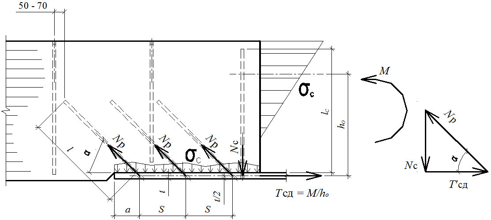
- А.3.7 Отверстия следует сверлить непосредственно перед вклеиванием. Они не должны оставаться свободными дольше одной смены, чтобы исключить возможность попадания в них воды, пыли, грязи и др.
- А.3.8 После сверления отверстия желательно продувать сжатым воздухом или прочищать специальным ершом от опилок.
- А.3.9 Диаметр и глубину отверстий, а также диаметр и длину соответствующих стержней необходимо контролировать погружением последних в отверстия без клея. Глубина сверления отмечается на сверлах краской, цветной изолентой или муфтамиограничителями.
- А.3.10 Для сверления используют специальные длинные сверла для древесины или обычные сверла по металлу.
- А.3.11 Длину сверл регулируют путем наращивания арматурными стержнями диаметром 12-14 мм при сварке. При этом центрирования достигают проковкой стыка в горячем состоянии. Конус нужного калибра также присоединяют при сварке.
- А.3.12 Для сверления используют ручные дрели мощностью не менее 600 Вт, обязательно с двумя ручками.
А.4Подготовка стержней к вклеиванию
- А.4.1 Стержни перед вклеиванием должны быть повторно освидетельствованы и соответствовать проекту по классу стали, числу, диаметрам, глубине и качеству.
- А.4.2 Необходимо убедиться в соответствии марки закладной детали проекту.
- А.4.3 Стержни должны свободно, без усилий входить в отверстия и занимать проектное положение. Для этого они должны быть проверены пробным погружением насухо.
- А.4.4 Стержни не должны быть загрязнены маслами, быть влажными или покрытыми ржавчиной. Для очистки используют щетки, наждачную бумагу, ацетон или пескоструйный аппарат.
- А.4.5 Перед вклеиванием температура стержней должна быть не ниже 18 С - 20 С; облегчения погружения допускается подогрев стержней до температуры от 30 С до 40 С.
А.5Приготовление клеев
- А.5.1 Перед работой следует убедиться в наличии компонентов в необходимом объеме, в их соответствии наименованиям, срокам годности и спецификациям (в проекте).
- А.5.2 Клей следует приготовлять при температуре воздуха в помещении и компонентов клея в пределах от 16 С до 25 С. При повышении температуры резко снижается жизнеспособность клея, а при понижении - технологичность. Увеличение температуры может привести к мгновенной реакции и, как следствие, к проблемам вклеивания, порче закладных деталей и емкости для клея.
- А.5.3 Необходимо строго контролировать время с момента смешивания отвердителя и смолы. Оно не должно превышать времени рабочей жизнеспособности клея (т. е. от 20 до 30 мин в зависимости от температуры).
- А.5.4 Для повышения жизнеспособности клей допускается охлаждать в емкости с водой, но при этом не допускается попадание воды в клей или отверстия.
- А.5.5 Для приготовления клея целесообразно использовать пластмассовую толстостенную емкость.
- А.5.6 Единовременно следует приготовлять не более 2,5 кг клея из-за опасности его разогрева и неуправляемой реакции.
- А.5.7 Для взвешивания необходимо использовать весы с точностью не более 10 г.
- А.5.8 Последовательность приготовления композиции: смола - пластификатор отвердитель - наполнитель.
- А.5.9 Время перемешивания клея: от 3 до 4 мин - вручную, от 2 до 3 мин - при механическом перемешивании. Клей перемешивают до однородной массы.
- А.5.10 Перед приготовлением клея тестируют качество компонентов путем изготовления контрольных образцов клея в объеме от 20 до 50 г с отверждением при повышенной температуре (не более 30 С) для активизации процесса.
- А.5.11 При определении объема клея для приготовления следует проводить соответствующие расчеты с учетом времени, потраченного на все операции: заполнение отверстий клеем, погружение стержней и др. Обычно приготовляют не более 1-2 кг клея. Для вклеивания одного стержня длиной 1 м и диаметром 20 мм требуется в среднем 350 г клея. Но в каждом случае удельный расход клея уточняют опытным путем, пробным вклеиванием первых стержней, чтобы после погружения стержня из отверстия появлялся небольшой избыток клея (порядка 5-10 г).
А.5.12 Дозировка клея по объему не допускается из-за налипания клея на стенки посуды и других специфических особенностей.
А.6Заполнение клеем отверстий и погружение стержней
- А.6.1 Это одна из ответственных операций, которую должна особо контролировать служба ОТК.
- А.6.2 Перед заполнением клеем для контроля глубины и диаметра отверстия необходимо опустить в него стержень насухо.
- А.6.3 Заполнение клеем и вклеивание стержня проводят последовательно, только в однодва отверстия, чтобы избежать неконтролируемой полимеризации или «голодного» вклеивания, когда непредвиденные утечки могут привести к недостатку клея или его избытку.
- А.6.4 Для заполнения клеем необходимо использовать мерную емкость объемом только на одно отверстие для качественного склеивания.
- А.6.5 Не допускается заполнение нескольких отверстий из общей емкости без контроля объема. Это неизбежно приведет к браку соединений и невозможности контроля полноты заполнения.
А.6.6 В отдельных случаях (для крупногабаритных конструкций) допускается заполнение клеем через дополнительные отверстия под давлением (рисунок А.2) с использованием туб типа шприцев или пневмоустановок. Ввиду важности такие операции следует проводить под контролем представителя проектной организации. После появления избытка клея сверху над стержнем дополнительные отверстия следует забивать специальными пробками.
Рисунок А.2 - Схема подачи клея под давлением
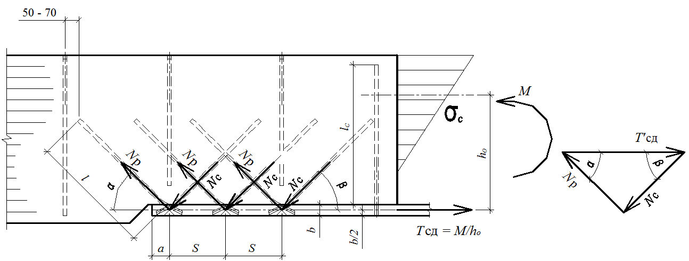
- А.6.7 Одновременно с заполнением отверстий должны быть изготовлены контрольные образцы для испытаний на продавливание, по одному образцу на каждый замес клея (А.7).
А.6.8 Сразу после заполнения отверстия клеем в него погружают стержень. Погружение проводят вдавливанием с вращением. Операция упрощается и качество возрастает, если погружение проводят с помощью вибратора (вибробулава с насадкой под стержень). Если после погружения из отверстия избыток клея не вышел на поверхность, то стержень необходимо приподнять и установить величину и причину недостатка клея. Если отверстие оказалось незаполненным доверху на два-три диаметра, то допускается компенсировать недостачу доливанием; если следов клея не будет обнаружено более чем на 1/3 длины стержня, то его необходимо полностью извлечь, заполнить отверстие дополнительным объемом и осуществить повторное погружение. При этом необходимо обязательно выявить и устранить причину «голодного» вклеивания - ошибки при дозировке клея либо утечка клея в трещины или соседние отверстия.
А.6.9 Соединения, в которых обнаружены утечки клея, следует актировать или забраковать с их заменой новыми по предложениям авторов проекта.
А.7Выдержка соединений после вклеивания и контроль качества
- А.7.1 После вклеивания соединения должны находиться в состоянии покоя при температуре плюс 18 С не менее 10-12 ч для достижения соединением разборной прочности.
- А.7.2 После 12 ч выдержки соединения могут перемещаться, кантоваться, но не допускается их нагружение.
- А.7.3 Нагружать соединение усилием, равным 70 % расчетной нагрузки, допускается после 3 сут отверждения клея.
- А.7.4 Испытания контрольных соединений проводят не ранее чем через 3 сут отверждения при температуре воздуха 18 С.
А.7.5 Контроль качества соединений включает:
- контроль влажности древесины в отверстии;
- правильность разметки;
- соответствие параметров соединений проекту;
- соответствие класса арматуры проекту;
- соответствие качества поверхности стержней;
- контроль качества компонентов клея;
- контроль жизнеспособности клея при заданной температуре в зоне производства работ;
- контроль условий производства работ (наличие подмостей, расположение оси отверстий по отношению к горизонту, наличие инструмента, наличие контрольных образцов и маркировки на них, готовность технологической карты и т. п.);
- контроль последовательности сверления отверстий и вклеивания;
- наличие емкостей объемом на одно соединение для заполнения отверстий клеем;
- контроль полноты заполнения отверстий клеем при погружении стержней;
- актирование соединений с «голодным» вклеиванием и меры по устранению его причин;
- отметки в журналах работ по технологическому процессу.
- А.7.6. Контрольные испытания образцов на продавливание (рисунок А.3) выполняют в соответствии с разделом 7 ГОСТ Р 56710-2015. Прочность на продавливание должна быть не ниже 6,5 МПа.
Примечание - Обозначения см. в 4.2.
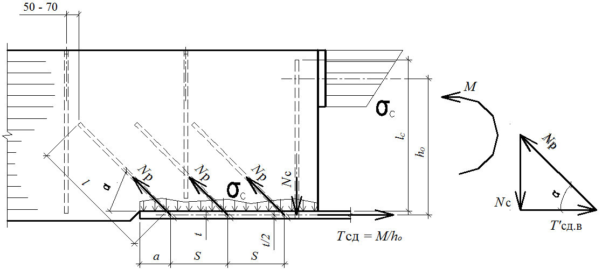
Рисунок А.3 - Схема образцов для испытаний
- А.7.7 Прочность на продавливание τ определяют отношением разрушающей нагрузки к боковой поверхности отверстия следующим образом:
где Р разр - разрушающая нагрузка; d о - диаметр отверстия; l вкл - глубина вклеивания, l вкл = (4…5) d , здесь d - номинальный диаметр стержня.
СП 382.1325800.2017
- А.7.8 Оформляют результаты испытаний в журнале. При этом отмечают наименование объекта, марку конструкций, дату вклеивания.
- А.7.9 В случае низких результатов совместно с авторами проекта принимают решение об усилении конструкций или испытаниях большего числа соединений.
- А.7.10 На каждую партию конструкций составляют акт освидетельствования скрытых работ по устройству соединений на вклеенных стержнях. Партией считают конструкции или узлы, принадлежащие одному объекту и изготовленные в одну смену.
А.8Техника безопасности
- А.8.1 Помещение, в котором изготовляют клей, должно быть оборудовано общей и местной принудительной и естественной вентиляцией, горячей и холодной водой.
- А.8.2 При работе с клеем необходимо в обязательном порядке использовать резиновые или полиэтиленовые перчатки.
- А.8.3 Попавший на руки клей следует удалять растворителями и водой с мылом.
- А.8.4 При сварке вклеенных деталей необходимы местный отсос продуктов горения и соблюдение противопожарных мероприятий. Защиту древесины от копоти, обугливания и воспламенения осуществляют с помощью экранов из стали, асбеста и пр.
- А.8.5 Сварку выполняют швами по захваткам, чтобы исключить перегрев и воспламенение древесины. Продолжительность непрерывной сварки одного шва не должна превышать 1 мин.
СП 382.1325800.2017
Библиография
- [1] Федеральный закон от 22 июля 2008 г. № 123-ФЗ «Технический регламент о требованиях пожарной безопасности»